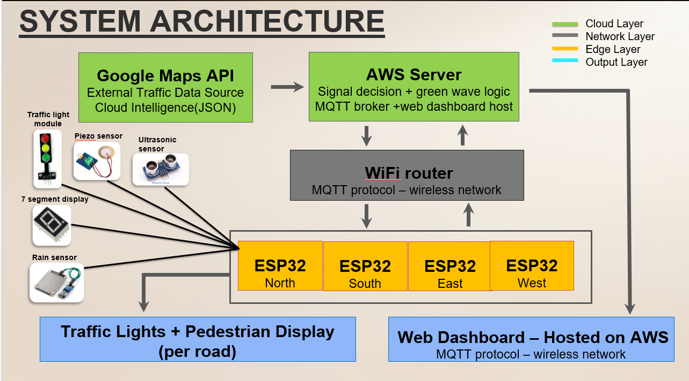
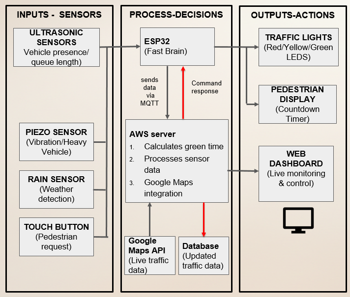

1. Introduction
The Problem
Current traffic management infrastructure in Sri Lanka relies almost exclusively on fixed-cycle traffic signals that operate on predetermined time intervals regardless of actual traffic conditions. This contributes to Rs. 70 billion in annual economic losses.
- Inefficiency: Empty roads at 2 AM still force drivers to wait a full 60-second red cycle.
- Rush-Hour Imbalance: 30 cars on one road receive the same green time as 2 cars on a perpendicular road.
- Weather Blindness: Yellow light durations ignore the 70% longer braking distance required in rain.
- Heavy Vehicle Hazard: Trucks and buses require additional clearance time; fixed systems cannot accommodate this.
- Pedestrian Danger: No on-demand crossing capability forces pedestrians to wait for fixed cycles or jaywalk.
The HYDRA Solution
HYDRA replaces conventional fixed-cycle traffic signals with a real-time, sensor-driven control system. By combining embedded hardware at the intersection edge with cloud-based intelligence hosted on AWS EC2, HYDRA dynamically adapts signal timing to actual road conditions.
- Dynamic Timing: Adjusts green phases based on live vehicle queue lengths.
- Weather-Aware: Automatic yellow-light extension during rain.
- Heavy Vehicle Buffer: Detects heavy vehicles via piezo vibration sensing and extends signal clearance times.
- Pedestrian Integration: Enable on-demand and immediate pedestrian crossing management.
- Resilient: Failsafe local cycle activates automatically if cloud connectivity is lost.
2. Solution Architecture
HYDRA is built on a three-layer cloud-edge architecture. Each layer has a clearly defined responsibility, and communication between layers is standardized through MQTT and HTTP/WebSocket protocols.
High-Level System Architecture

Cloud-edge fusion combining AWS servers, MQTT brokers, and ESP32 edge nodes.
Data Flow & Processing

The logical flow from edge sensors through the AWS fast brain to physical signal actuation.
End-to-End Data Flow
| Step | Process & Action | Data Output |
|---|---|---|
| 1 | ESP32 reads sensor values continuously (Ultrasonic, Piezo, Rain, Touch). | Raw sensor data |
| 2 | ESP32 packages readings into JSON and publishes to MQTT via Wi-Fi (`hydra/sensor/{road_id}`). | JSON payload |
| 3 | Node.js backend parses JSON and queries Google Maps Traffic API. | Traffic density score (0-100) |
| 4 | Signal timing algorithm calculates optimal green time. Commands published back via MQTT and logged to MongoDB. | Computed timing values |
| 5 | ESP32 subscribes to `hydra/signal/{road_id}`, receives command, and actuates LED traffic lights and 7-segment display. | LED state + countdown |
| 6 | React dashboard polls AWS via REST API/WebSocket for real-time visual updates. | Live UI updates |
3. Hardware & Software Designs
Edge Layer (Hardware Sensing)
Each road unit uses an ESP32 DevKit V1 responsible for continuously reading sensors, packaging data, and actuating signals.
Ultrasonic (HC-SR04)
Placed at 5cm and 15cm along the road. 1 sensor blocked = low traffic; both blocked = heavy traffic.
Piezo Sensor
Detects characteristic low-frequency vibrations from trucks/buses for clearance buffers.
Rain Sensor
Elevated mount above road. Triggers weather-aware logic when road surface is wet.
Touch Button
Immediate crossing request during red; crossing request queued during green phase.
LED & 7-Segment
Actuates RED, YELLOW, GREEN states and displays remaining seconds for the current phase.
Cloud & Client Layer (Software Stack)
| Category | Technology | Purpose in HYDRA |
|---|---|---|
| Backend | Node.js + Express | Server-side processing, signal timing algorithm, REST API. |
| Protocol | MQTT (Mosquitto) | Lightweight pub/sub messaging between ESP32 and cloud. |
| Database | MongoDB | Persistent storage for sensor data, signal logs, traffic events. |
| External API | Google Maps Traffic API | External traffic density enrichment for intersection area. |
| Frontend | React | Live web dashboard for monitoring and manual control. |
4. Key Functionalities
Dynamic Green Time Calculation
The core functionality of HYDRA is its ability to calculate optimal green signal durations in real time. The algorithm combines three data sources:
- Local sensor readings from the road's two ultrasonic sensors (queue length proxy).
- Piezo vibration status (heavy vehicle presence).
- Google Maps Traffic API congestion score for the intersection area.
The base green time is adjusted using the following rules applied in sequence:
- Base Green Time: Configurable per intersection (default 8 seconds).
- One Ultrasonic Sensor Blocked: Add 3 seconds to green time.
- Both Ultrasonic Sensors Blocked: Add 6 seconds to green time (replaces the +3s rule).
- Google Maps Congestion Score HIGH: Add a further 2–4 seconds.
- Pedestrian Crossing Requested: Reserve minimum crossing time at the next available red phase.
- Heavy Vehicle (Piezo Triggered): Add 2-second clearance buffer to the end of the green phase.
Weather-Aware Signal Timing
The rain sensor provides a binary wet/dry road status. When rain is detected:
- Yellow light duration is automatically extended by a factor of 1.5x (e.g., a 3-second yellow becomes 4.5 seconds).
- This accommodates the 70% longer braking distance required on wet road surfaces.
- The rain flag is included in all MQTT payloads so the backend can adjust all roads simultaneously.
Heavy Vehicle Detection
The piezo sensor detects low-frequency vibrations produced by trucks, buses, and construction equipment.
- The current green phase is extended by a configurable clearance buffer (default: 2 additional seconds).
- This allows the heavy vehicle to fully clear the intersection before the signal changes, preventing junction-blocking.
- Events are logged in MongoDB for traffic analysis.
Pedestrian Crossing Management
The capacitive touch button provides two modes of crossing management with 7-segment countdown feedback:
- During RED phase (Immediate): Request is acknowledged instantly, ensuring the current red phase provides a safe crossing window.
- During GREEN phase (Queued): Request is queued and honoured at the next available red phase, calculated into the next cycle.
Multi-Intersection Green Wave
For deployments spanning multiple intersections along a corridor, HYDRA's cloud backend supports green wave synchronization.
The Node.js server tracks the signal timing of upstream and downstream intersections. It adjusts green start times so that vehicles travelling at the typical speed limit will encounter consecutive green lights without stopping. This is managed as a cloud-based scheduling optimization problem, dispatching synchronized MQTT commands.
Live Web Dashboard
The React dashboard provides operators with full real-time visibility:
- Signal State Display: Live RED/YELLOW/GREEN indicators.
- Sensor Panel: Live ultrasonic readings, piezo status, rain flag, and button states.
- Timing Panel: Current computed durations per road.
- Traffic Map: Google Maps integration with live congestion overlays.
- Event Log & Overrides: Timestamped logs and manual state controls for emergencies.
5. Testing & Resilience
Fail-Safe Local Cycle
To ensure rigorous resilience testing, the ESP32 firmware implements a watchdog mechanism that monitors Wi-Fi connectivity and MQTT heartbeat messages from the cloud.
If connectivity is lost for more than a configurable timeout period, the ESP32 automatically reverts to a fixed local cycle to ensure the intersection remains safely functional at all times, even during AWS outages:
- RED: 3 seconds
- GREEN: 3 seconds
- YELLOW: 3 seconds
6. Detailed Budget
Hardware budget sized for a full four-road intersection deployment. AWS EC2 and Google Maps API charges are handled under a separate cloud budget.
| Item | Qty | Unit Cost (LKR) | Total (LKR) |
|---|---|---|---|
| ESP32 DevKit V1 (N, S, E, W) | 4 | 1,450 | 5,800 |
| LED Traffic Light Module | 8 | 150 | 1,200 |
| Rain Sensor Module | 1 | 250 | 250 |
| Ultrasonic Sensor HC-SR04 | 8 | 190 | 1,520 |
| Piezo Vibration Sensor | 4 | 100 | 400 |
| Seven Segment Display | 4 | 50 | 200 |
| Capacitive Touch TTP223 | 4 | 100 | 400 |
| Bread Boards | 6 | 150 | 900 |
| Others (wiring, connectors, misc.) | - | - | 2,030 |
| TOTAL BUDGET | LKR 12,700 |
7. Conclusion & Future Work
System Impact
HYDRA presents a complete, working proof-of-concept for cloud-edge fusion in urban traffic management. By dynamically adapting signal timing based on actual road conditions—vehicle density, weather, heavy vehicles, and pedestrian demand—HYDRA eliminates the fundamental inefficiency of fixed-cycle traffic lights.
Future Work
- Computer Vision: Replace ultrasonic sensors with edge-AI cameras.
- Emergency Preemption: Integrate GPS for ambulance green corridors.
- Adaptive ML: Train models on MongoDB historical data to predict optimal timings.
- City-Scale Deployment: Deploy at high-congestion intersections in Colombo.